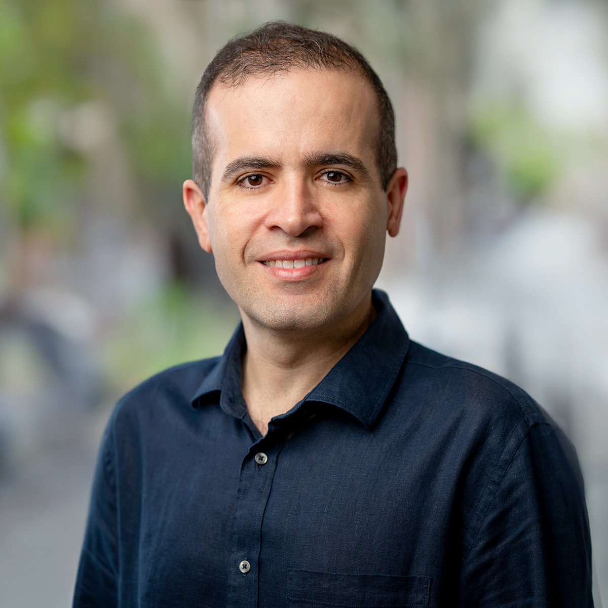

Principal Investigator

Dr. Reza Mirzaei
Assistant Professor, University of Alberta
About
Dr. Reza Mirzaei is an Assistant Professor in the Department of Oncology at the University of Alberta, with a cross-appointment in the Department of Medical Microbiology & Immunology (MMI), and a Research Scientist at the Cross Cancer Institute. He established his independent research program at the University of Alberta in 2024, where his laboratory investigates the mechanisms underlying tumor progression, tumor–immune interactions, and resistance to cancer immunotherapy.
He received his MSc and PhD training in Immunology, followed by postdoctoral training at the University of Calgary, where he studied the brain tumor microenvironment and the complex interactions between cancer cells and immune cells. He subsequently continued his research career at the Icahn School of Medicine at Mount Sinai and Memorial Sloan Kettering Cancer Center in New York, where his work focused on tumor immunology, tumor–microenvironment interactions, and mechanisms that regulate responses to cancer immunotherapy.
His current research program integrates cancer immunology, functional genomics, CRISPR-based screening, and single-cell and spatial technologies to uncover mechanisms that control tumor progression and therapeutic response. His laboratory has a particular interest in glioblastoma and colorectal cancer, using complementary experimental and computational approaches to study tumor heterogeneity and the immune microenvironment.
A major focus of his research is understanding how cancer cells communicate with and reshape the immune microenvironment. In particular, his laboratory investigates how myeloid cells, including tumor-associated macrophages and microglia, interact with heterogeneous cancer cell populations to influence anti-tumor immunity, tumor evolution, and resistance to immunotherapy.
By combining mechanistic studies with functional genomic approaches and high-resolution single-cell and spatial profiling, his research aims to identify tumor-intrinsic and immune-regulatory pathways that can be therapeutically targeted. The long-term goal of his research program is to translate these discoveries into new therapeutic targets, biomarkers, and treatment strategies that improve the effectiveness and durability of cancer immunotherapy.